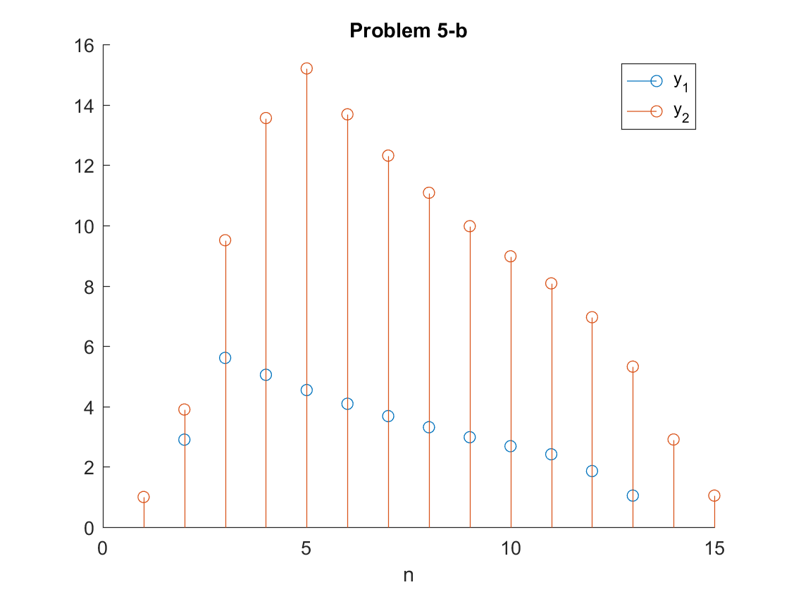

Contents
clear; clc;
Problem 2 - b,c
A = 1;
f1 = 0.3;
seq_length = 4;
Fss = [1000, 3000, 6000, 12000];
for Fs=Fss
n_samples = seq_length*Fs;
x = zeros(1, n_samples);
for i=1:n_samples
x(i) = A*cos(2*pi()*f1*i);
end
audiowrite(strcat('Fs_',int2str(Fs),'.wav'), x, Fs);
end
Problem 2 - d
A = 1;
seq_length = 4;
Fs = 8000;
F_list = [1000, 3000, 6000];
f_list = F_list./Fs;
f_list = mod(f_list + 0.5, 1) - 0.5;
n_samples = seq_length*Fs;
x = zeros(1, n_samples);
for f=f_list
for i=1:n_samples
x(i) = A*cos(2*pi()*f*i);
end
audiowrite(strcat('f_',num2str(f),'.wav'), x, Fs);
end
Problem 5 - b
x = 1:3;
h1 = [1 1 1];
h2 = 0.9.^(0:10);
y1 = conv(x,h1)
y2 = conv(y1,h2);
figure; hold on;
stem(y1);
stem(y2);
title('Problem 5-b'); xlabel('n'); legend('y_1', 'y_2');
y1 =
1 3 6 5 3

Problem 5 - d
x = 1:3;
h1 = [1 1 1];
h2 = 0.9.^(0:10);
y1 = conv(x,h2);
y2 = conv(y1,h1);
figure; hold on;
stem(y1);
stem(y2);
title('Problem 5-b'); xlabel('n'); legend('y_1', 'y_2');
